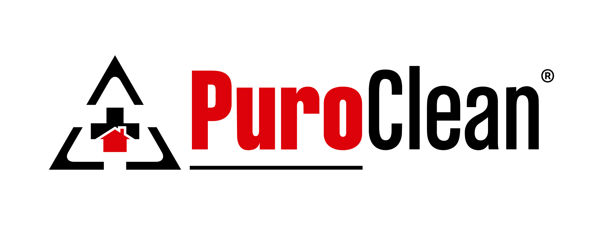

WORK & LEADERSHIP

Operations and Social Media Intern
May 2019 - present
- Developed spreadsheets to improve job progress tracking, invoicing, and collecting; helped clear backlog of outstanding invoices
- Learned industry estimating software (Xactimate) to assist with invoicing and helped update insurance company job tracking tool (XactAnalysis) when job tasks completed
- Expanded social media and online presence by implementing an Instagram account, creating original content and posting schedules; secured a 240% increase in 5-star Google reviews
Director of Philanthropy
December 2019 - present
- Organized Covid-19 Fundraiser that raised $1.5k to support local restaurants and provide 170 meals to Michigan Medicine
- Led meal packaging event with Rise Against Hunger, raising nearly $5k and packaging 7.5k meals with over 50 participants
- Communicated with the Make-A-Wish Foundation to foster a strong relationship between the organization and the chapter, while gaining experience working with a large national organization
Junior Student Liaison
October 2020 - present
- Responsible for maintaining communication with junior UMSI students and student organizations
- Act as a liaison with the Career Development Office and connect with the Transfer Student Advisory board for monthly feedback
- Work closely with student government and UMSI diversity committee to promote diversity initiatives within student body
SKILLS
Python
HTML
CSS
R
Spanish